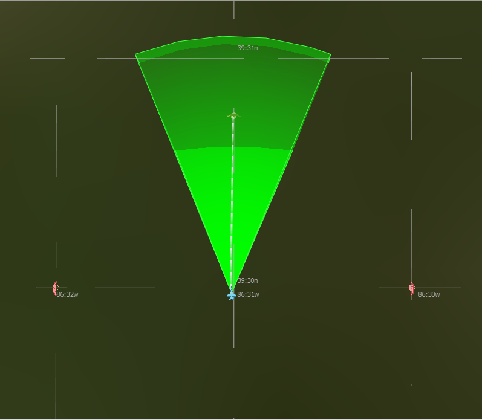

UCI Example¶
The following is an example showing how the AFSIM UCI could be used to communicate with Non-AFSIM programs. A platform one AFSIM instance (ship1) will send periodic commands via UCI messages to move the center of an ESM sensor volume to a given azimuth and elevation to point at different targets on a second instance (ship2). These instances will communicate via the dis_interface. This example can be found in wsf_oms_uci/data/esm_demo.
The CAL_ACTIVEMQ_CONFIG environment variable should be set to ./RefCppCalConfiguration.xml. This allows each instance of AFSIM to handle it’s own RefCAL.
Ship1¶
Reference CAL config file (ship1/RefCppCalConfiguration.xml):
<?xml version="1.0" encoding="UTF-8"?>
<!--Sample XML file generated by XMLSpy v2012 rel. 2 sp1 (x64) (http://www.altova.com)-->
<RefCppCalConfiguration xmlns:xsi="http://www.w3.org/2001/XMLSchema-instance">
<ActiveMQBroker>tcp://127.0.0.1:61616</ActiveMQBroker>
<ActiveMQNoEchoMode>1</ActiveMQNoEchoMode>
<ReaderQueueMax>1000</ReaderQueueMax>
<ReaderSleepMicroseconds>1000</ReaderSleepMicroseconds>
<ServiceList>
<Service Name="ship1" UUID="CCCCCCCC-CCCC-CCCC-CCCC-CCCCCCCCCCCD">
<System Label="uci" UUID="AA020000-0000-0000-0000-000000000000"/>
<Domain ID="10"/>
</Service>
</ServiceList>
</RefCppCalConfiguration>
Startup file (ship1/test_scenario_afsim_ship1.txt):
# UCI ESM Test Scenario (non-AFSIM simulation proxy)
# Run this scenario concurrently in Warlock with esm_test_scenario_ship2.txt
include ../test_scenario_non_afsim_proxy.txt
Non-AFSIM Proxy (test_scenario_non_afsim_proxy.txt):
# Platform "sense" is internally moved. ESM UCI messages are received
# for platform "sense" in the other simulation.
# The ESM sensor on platfom sense is run in the other simulation.
include ./test_scenario_common.txt
dis_interface
application 1
// Entity type SIMPLE_SENSE maps to SENSE type in uci-enabled app
entity_type SIMPLE_SENSE 1:2:225:1:12:0:0
entity_id sense 1
entity_id target_1 2
entity_id target_2 3
entity_id target_3 4
end_dis_interface
uci_interface
service_name ship1
service_descriptor SHIP1
end_uci_interface
platform sense SIMPLE_SENSE
radar_signature FIGHTER_RADAR_SIGNATURE
position 39:30n 86:31w
altitude 1000 feet
edit uci_component computer
processor esm_command
debug
end_uci_component
add processor esm_command WSF_SCRIPT_PROCESSOR
internal_link computer
on_message
type UCI_ESM_CAPABILITY_MESSAGE // esm capability message
script
SuppressMessage();
writeln_d(TIME_NOW, ": Received UCI esm capability message!!");
UCI_ESM_CapabilityMessage msg = (UCI_ESM_CapabilityMessage)MESSAGE;
if (msg.IsValid())
{
RequestControl(msg);
}
else
{
writeln_d("Invalid UCI_ESM_CapabilityMessage");
}
end_script
type UCI_CONTROL_REQUEST_STATUS_MESSAGE // Control request status
script
SuppressMessage();
UCI_ControlRequestStatusMessage msg = (UCI_ControlRequestStatusMessage)MESSAGE;
if (msg.IsApproved())
{
writeln_d("Control request ", msg.UUID(), " has been accepted!");
}
else if (msg.IsRejected())
{
writeln_d("Control request ", msg.UUID(), " was rejected because ",
msg.GetRemarks());
}
else if (msg.IsDeleted())
{
writeln_d("Control request ", msg.UUID(), " was deleted because ",
msg.GetRemarks());
}
else if (msg.IsPending())
{
writeln_d("Control request ", msg.UUID(), " is pending.");
}
end_script
type UCI_ESM_CAPABILITY_STATUS_MESSAGE
script
SuppressMessage();
UCI_ESM_CapabilityStatusMessage msg = (UCI_ESM_CapabilityStatusMessage)MESSAGE;
for (int i = 0; i < msg.Size(); i = i + 1)
{
string status;
UCI_CapabilityStatus capStatus = msg.CapabilityStatus(i);
if (capStatus.IsAvailable())
{
status = "AVAILABLE";
}
else if (capStatus.IsDisabled())
{
status = "DISABLED";
}
else if (capStatus.IsExpended())
{
status = "EXPENDED";
}
else if (capStatus.IsFaulted())
{
status = "FAULTED";
}
else if (capStatus.IsTemporarilyUnavailable())
{
status = "TEMPORARILTY_UNAVAILABLE";
}
else if (capStatus.IsUnavailable())
{
status = "UNAVAILABLE";
}
else
{
status = "UNKNOWN";
}
writeln_d("Capability ", i, " status: ", status);
}
end_script
default
script
writeln_d("Received message: ", MESSAGE.Type());
end_script
end_on_message
execute at_interval_of 10 seconds
if (!capabilities.Empty())
{
UpdateDirection();
SendCommand();
UpdateMode();
}
end_execute
end_processor
end_platform
platform target_1 TARGET
side red
position 39:31n 86:31w altitude 1000 ft
heading 180 deg
end_platform
platform target_2 TARGET
side red
position 39:30n 86:30w altitude 2500 ft
heading -90 deg
end_platform
platform target_3 TARGET
side red
position 39:30n 86:32w altitude 4000 ft
heading 90 deg
end_platform
realtime
Ship2¶
Reference CAL config file (ship1/RefCppCalConfiguration.xml):
<?xml version="1.0" encoding="UTF-8"?>
<!--Sample XML file generated by XMLSpy v2012 rel. 2 sp1 (x64) (http://www.altova.com)-->
<RefCppCalConfiguration xmlns:xsi="http://www.w3.org/2001/XMLSchema-instance">
<ActiveMQBroker>tcp://127.0.0.1:61616</ActiveMQBroker>
<ActiveMQNoEchoMode>1</ActiveMQNoEchoMode>
<ReaderQueueMax>1000</ReaderQueueMax>
<ReaderSleepMicroseconds>1000</ReaderSleepMicroseconds>
<ServiceList>
<Service Name="ship2" UUID="CCCCCCCC-CCCC-CCCC-CCCC-CCCCCCCCCCCC">
<System Label="uci" UUID="AA020000-0000-0000-0000-000000000000"/>
<Domain ID="10"/>
</Service>
</ServiceList>
</RefCppCalConfiguration>
Startup file (ship2/test_scenario_afsim_ship2.txt):
# UCI ESM Test Scenario (AFSIM simulation)
# Run this scenario concurrently in Warlock with esm_test_scenario_non_afsim_proxy.txt
# platform "sense" is externally controlled through DIS (see map_external_entity) in the other simulation,
# whereas the ESM sensor on platfom "sense" is run in this process.
include ../test_scenario_afsim.txt
AFSIM (test_scenario_afsim.txt)
# Platform "sense" is externally controlled through DIS (see map_external_entity) in the other simulation,
# whereas the ESM sensor on platfom "sense" is run in this process.
include ./test_scenario_common.txt
dis_interface
application 2
// platform sense is externally controlled
// Entity type SIMPLE_SENSE maps to SENSE type
entity_type SENSE 1:2:225:1:12:0:0
map_external_entity 1:1:1
end_dis_interface
uci_interface
service_name ship2
service_descriptor SHIP2
end_uci_interface
platform_availability
type TARGET availability 0.0
end_platform_availability
realtime
Common¶
Common (test_scenario_common.txt):
include sensor_definitions.txt
include weapon_definitions.txt
//Uncomment to turn on debug output
//script_debug_writes true
platform_type SIMPLE_SENSE WSF_PLATFORM
side blue
icon f-18
uci_component computer COMPUTER
end_uci_component
script_variables
Set<string> systemIds = {};
Map<string, UCI_CapabilityId> controlRequests = {};
Array<UCI_CapabilityId> capabilities = {};
int currentMode = 0;
double currentAz = 0;
double currentEl = 0;
bool enable = true;
end_script_variables
mover WSF_AIR_MOVER
end_mover
script void SendSettingsCommand()
WsfProcessor sp = PLATFORM.Processor("esm_command");
UCI_CapabilityState state = UCI_CapabilityState.DISABLE();
if (enable)
{
state = UCI_CapabilityState.ENABLE();
}
UCI_CapabilityId id = capabilities[currentMode];
UCI_ESM_SettingsCommandMessage scMsg = UCI_ESM_SettingsCommandMessage.Construct(id,
state);
sp.SendMessage(scMsg);
end_script
script void RequestControl(UCI_ESM_CapabilityMessage aMsg)
WsfProcessor sp = PLATFORM.Processor("esm_command");
UCI_SystemId systemId = aMsg.Header().SystemId();
if (!systemIds.Exists(systemId.UUID()))
{
int size = aMsg.Size();
for(int i = 0; i < size; i += 1)
{
UCI_CapabilityId capabilityId = aMsg.Capability(i).CapabilityId();
string uuid = capabilityId.UUID();
string description = capabilityId.Descriptor();
writeln_d(i, " : ", uuid, " : ", description);
// send a esm control request message
UCI_Control controlType = UCI_Control.CAPABILITY_PRIMARY();
UCI_ControlRequest requestType = UCI_ControlRequest.ACQUIRE();
UCI_ControlRequestMessage crm = UCI_ControlRequestMessage.Construct(controlType,
requestType,
systemId,
capabilityId);
controlRequests.Set(crm.UUID(), capabilityId);
sp.SendMessage(crm);
systemIds.Insert(systemId.UUID());
capabilities.PushBack(capabilityId);
//Initialize capabilities to desired state
int initialMode = currentMode;
for (int i = 0; i < capabilities.Size(); i += 1)
{
currentMode = i;
SendSettingsCommand();
}
currentMode = initialMode;
}
}
end_script
script void UpdateDirection()
if (currentAz == 0)
{
currentAz = -Math.PI_OVER_2();
currentEl = 36 * Math.RAD_PER_DEG();
}
else if (currentAz == -Math.PI_OVER_2())
{
currentAz = Math.PI_OVER_2();
currentEl = 18 * Math.RAD_PER_DEG();
}
else
{
currentAz = 0;
currentEl = 0;
}
end_script
script void SendCommand()
WsfProcessor sp = PLATFORM.Processor("esm_command");
UCI_LOS_Reference losRef = UCI_LOS_Reference.INERTIAL();
UCI_ElevationScanStabilization stabilization = UCI_ElevationScanStabilization.CENTER_ALTITUDE();
UCI_SubCapabilityDetails details = UCI_SubCapabilityDetails.Construct(losRef,
stabilization,
currentAz,
currentEl);
UCI_SubCapabilitySelection selection = UCI_SubCapabilitySelection.Construct(details);
UCI_CapabilityId id = capabilities[currentMode];
UCI_ESM_CapabilityCommand capCommand = UCI_ESM_CapabilityCommand.Construct(id,
selection);
UCI_ESM_Command esmCommand = UCI_ESM_Command.Construct(capCommand);
UCI_ESM_CommandMessage ecm = UCI_ESM_CommandMessage.Construct(esmCommand);
string status = "enabled";
if (!enable)
{
status = "disabled";
}
writeln_d("New command:");
writeln_d(" Az: ", currentAz);
writeln_d(" El: ", currentEl);
writeln_d(" Mode: ", currentMode);
writeln_d(" Status: ", status);
sp.SendMessage(ecm);
end_script
script void UpdateMode()
if (currentAz == 0)
{
currentMode = MATH.Mod(currentMode + 1, capabilities.Size());
if (currentMode == 0)
{
enable = !enable;
}
}
SendSettingsCommand();
end_script
end_platform_type
platform_type SENSE WSF_PLATFORM
side blue
icon f-18
uci_component esm_uci_component ESM
sensor esm
update_message_interval 5 seconds
debug
internal_link computer
end_uci_component
uci_component computer COMPUTER
internal_link esm_uci_component
end_uci_component
sensor esm ESM_SENSOR
on
processor track_manager
ignore_same_side
end_sensor
uci_component weapons WEAPON
update_message_interval 5 s
capability missile
uuids
8BEDF810-EC9D-40E4-8F4A-000000000000
8BEDF810-EC9D-40E4-8F4A-000000000001
end_uuids
end_capability
debug
end_uci_component
add weapon missile missile
quantity 2
end_weapon
processor track_manager WSF_TRACK_MANAGER
end_processor
mover WSF_AIR_MOVER
end_mover
end_platform_type
platform_type TARGET EW_RADAR_SITE
end_platform_type
dis_interface
exercise 1
site 1
autostart
connections
broadcast 255.255.255.255 port 3000
end_connections
entity_type TARGET 1:2:222:1:19:11:0
emitter_type EW_RADAR 5
end_dis_interface
start_time_now
end_time 1 hour
Sensor Definitions (sensor_definitions.txt):
radar_signature FIGHTER_RADAR_SIGNATURE
constant 10 m^2
end_radar_signature
antenna_pattern EW_RADAR_ANTENNA
rectangular_pattern
peak_gain 35 dB
minimum_gain -20 dB
azimuth_beamwidth 10 deg
elevation_beamwidth 45 deg
end_rectangular_pattern
end_antenna_pattern
# A simple EW radar
sensor EW_RADAR WSF_RADAR_SENSOR
frame_time 1 sec
# Specify the location and orientation of the sensor on the platform.
location 0.0 0.0 -30 m
# The sensor sweeps only in azimuth
scan_mode azimuth
azimuth_scan_limits -180 deg 180 deg
# The field of view, minimum_range and maximum_range are not required.
# They are simply used for quick culling and should be generous.
# (i.e. the field_of_view limits should be probably be larger than the
# corresponding slew limit because the beam can probably detect things
# outside the slew limit).
elevation_field_of_view -2.5 deg 42.5 deg
minimum_range 0 nm
maximum_range 4 km
one_m2_detect_range 225 km
transmitter
power 750 kw
frequency 900 mhz
bandwidth 0.1 mhz
pulse_width 10 usec
pulse_repetition_interval 750 usec // max PRI range of 225 km
antenna_pattern EW_RADAR_ANTENNA
antenna_tilt 10 deg
end_transmitter
receiver
antenna_pattern EW_RADAR_ANTENNA
antenna_tilt 10 deg
frequency 900 mhz
bandwidth 1 mhz
end_receiver
hits_to_establish_track 3 5 # 3 of last 5 scans to establish track
hits_to_maintain_track 1 4 # 1 of last 4 scans to maintain track
reports_location
reports_velocity
reports_signal_to_noise
reports_range
reports_bearing
reports_elevation
end_sensor
# ************************************************************************
# ESM Detector
antenna_pattern ESM_ANTENNA
uniform_pattern
azimuth_beamwidth 45 deg
elevation_beamwidth 10 deg
end_antenna_pattern
sensor ESM_SENSOR WSF_ESM_SENSOR
mode_template
frame_time 4 sec
maximum_range 4 km
receiver
antenna_pattern ESM_ANTENNA
detection_threshold 5 db
noise_power -180 dbw
internal_loss 0 db
end_receiver
frequency_band 0.1 ghz 20 ghz
reports_location
reports_type
reports_frequency
scan_stabilization pitch_and_roll
end_mode_template
mode firstMode
reports_iff
end_mode
mode secondMode
reports_bearing
end_mode
slew_mode both
end_sensor
# ************************************************************************
# Define the platform types
# ************************************************************************
platform_type EW_RADAR_SITE WSF_PLATFORM
icon Ground_Radar
mover WSF_GROUND_MOVER end_mover
sensor ew_radar EW_RADAR
on
processor track_manager
ignore_same_side
end_sensor
processor track_manager WSF_TRACK_MANAGER
end_processor
end_platform_type
Weapon Definitions (weapon_definitions.txt):
antenna_pattern MISSILE_RDR_RX_ANTENNA
uniform_pattern
peak_gain 20 db
azimuth_beamwidth 360 degrees
elevation_beamwidth 180 degrees
end_uniform_pattern
end_antenna_pattern
antenna_pattern MISSILE_RDR_TX_ANTENNA
uniform_pattern
peak_gain 20 db
azimuth_beamwidth 360 degrees
elevation_beamwidth 180 degrees
end_uniform_pattern
end_antenna_pattern
sensor MISSILE_RADAR WSF_RADAR_SENSOR
one_m2_detect_range 25 km
hits_to_establish_track 3 3
frame_time 1 sec
maximum_request_count 1
search_while_track
scan_mode both
maximum_range 25 km
transmitter
antenna_pattern MISSILE_RDR_TX_ANTENNA
power 1 mw
frequency 14.8 ghz
pulse_repetition_frequency 250 hz
internal_loss 10 db
end_transmitter
receiver
antenna_pattern MISSILE_RDR_RX_ANTENNA
bandwidth 1.6 mhz
detection_threshold 3 db
noise_power -160 dbw
internal_loss 10 db
end_receiver
# for now the filter is required if we're to report velocity
filter WSF_ALPHA_BETA_FILTER
alpha 0.6
beta 0.2
end_filter
reports_location
reports_velocity
reports_bearing
reports_type
end_sensor
aero MISSILE_AERO WSF_AERO
cd_zero_subsonic 0.12
cd_zero_supersonic 0.35
mach_begin_cd_rise 0.95
mach_end_cd_rise 1.3
mach_max_supersonic 3.3 // max speed of 994 m/sec
reference_area 0.09 m2
cl_max 5.0
aspect_ratio 1.5
end_aero
platform_type MISSILE WSF_PLATFORM
icon SA-10_Missile
sensor missile_radar MISSILE_RADAR
on
processor track_processor
ignore ignored-by-iads-radar
end_sensor
mover WSF_GUIDED_MOVER
//show_status
initial_mass 500 kg
fuel_mass 200 kg
specific_impulse 300 sec
thrust 44000 nt
aero MISSILE_AERO
end_mover
processor track_processor WSF_TRACK_PROCESSOR
purge_interval 1 min
end_processor
processor missile_guidance_computer WSF_GUIDANCE_COMPUTER
proportional_navigation_gain 10.0
velocity_pursuit_gain 4.0
g_bias 1.2
maximum_commanded_g 40.0 g
guidance_delay 4.0 sec
end_processor
processor fuze WSF_AIR_TARGET_FUSE
time_of_flight_to_arm 10.0 sec // Don't arm during the boost phase
coast_time_on_loss_of_target 4.0 sec
end_processor
category ignored-by-bomber-radar
category ignored-by-iads-radar
end_platform_type
weapon_effects MISSILE_WARHEAD WSF_GRADUATED_LETHALITY
use_3d_radius
radius_and_pk 100 m 0.75
radius_and_pk 500 m 0.55
radius_and_pk 5000 m 0
end_weapon_effects
weapon missile WSF_EXPLICIT_WEAPON
launched_platform_type MISSILE
weapon_effects MISSILE_WARHEAD
launch_delta_v 50.0 0.0 0.0 m/s
slew_mode both
//elevation_slew_limits 30 deg 80 deg
elevation_slew_limits 60 deg 89.5 deg
end_weapon